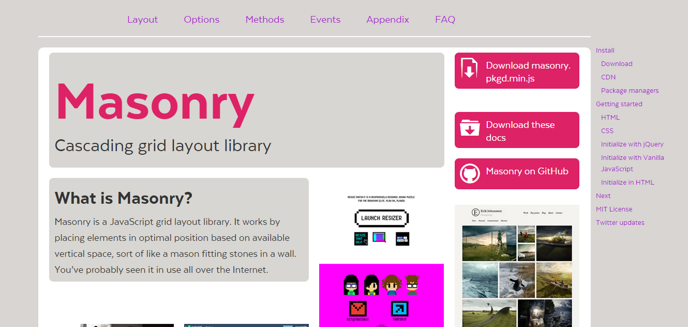

下一篇文章：瀑布流的无限加载（二）
瀑布流，又称瀑布流式布局。是比较流行的一种网站页面布局，视觉表现为参差不齐的多栏布局，随着页面滚动条向下滚动，这种布局还会不断加载数据块并附加至当前尾部。现在越来越多的网站使用了瀑布流布局，有不少可以实现的方法，可以直接使用插件。
这次学习做瀑布流主要借用了其他的插件，实现了图片瀑布流布局，图片延迟加载，以及无限滚动加载。
图片延迟加载的好处是：
1. 减少页面初次加载请求数；2. 减少初次加载完毕所需要的时间；3. 避免不必要的图片加载.
在图片量较大的情况下是可以明显节省初次加载时间的， 可以避免不必要的资源浪费，页面下部可视视窗外的很多元素也许用户根本不会去查看，所以它们的背景图也不必加载，只有当用户看到它们时，才去加载。
背景图片延时加载，有利于减少服务器压力。
详细的完整步骤如下：
图片的瀑布流布局，使用了masonry插件，延迟加载使用了lazyload插件，无限滚动加载使用了blocksit插件。
jquery下载地址：http://jquery.com/
masonry插件下载的地址：http://masonry.desandro.com/
点击进去显示如下

lazyload插件下载的地址：http://plugins.jquery.com/lazyload/
然后在你的头文件添加(src中为你的js文件的路径）
<script src="js/jquery.min.js"></script>
<script src="js/jquery.masonry.min.js"></script>
<script type="text/javascript" src="js/jquery.lazyload.min.js"></script>
css代码：
.container-fluid {
padding: 0px;
}
.box {
margin-bottom: 20px;
float: left;
width: 220px;
}
.box img {
max-width: 100%
}
body代码：
<div id="masonry" class="container-fluid">
<div class="box"><img src="loading.gif" data-original="images/4.jpg" /></div>
<div class="box"><img src="loading.gif" data-original="images/3.jpg" /></div>
<div class="box"><img src="loading.gif" data-original="images/2.jpg" /></div>
<div class="box"><img src="loading.gif" data-original="images/1.jpg" /></div>
<div id="load" style="display: none;">
<div class="box"><img src="loading.gif" data-original="images/9.jpg" /></div>
<div class="box"><img src="loading.gif" data-original="images/10.jpg" /></div>
<div class="box"><img src="loading.gif" data-original="images/6.jpg" /></div>
<div class="box"><img src="loading.gif" data-original="images/4.jpg" /></div>
</div>
</div>
js代码：
<script type="text/javascript">
$(function() {
f_masonry();
$("img").lazyload({
effect:"fadeIn",
failurelimit:40,
load:f_masonry
});
$(".box").animate({width:220},"slow")
$(".box").fadeIn(2000);
function f_masonry() {
$('#masonry').masonry({
gutterWidth: 10,
itemSelector: '.box',
isAnimated: true
});
}
$(window).scroll(function () {
// 当滚动到最底部以上50像素时， 加载新内容
if ($(document).height() - $(this).scrollTop() - $(this).height() < 50) {
$('#masonry').append($("#load").html());
$('#masonry').BlocksIt({
numOfCol: 5,
offsetX: 8,
offsetY: 8
});
$("img").lazyload();
}
});
});
</script>
点击查看瀑布流效果
下一篇文章：瀑布流的无限加载（二）